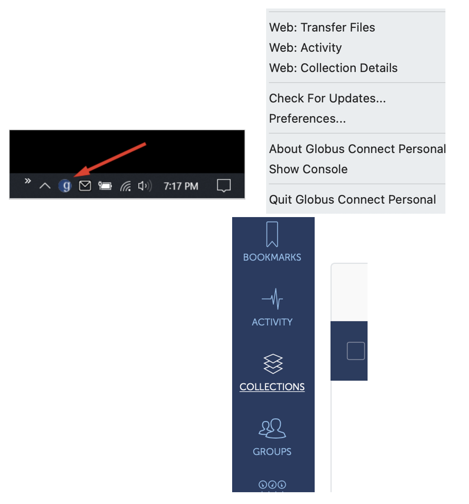
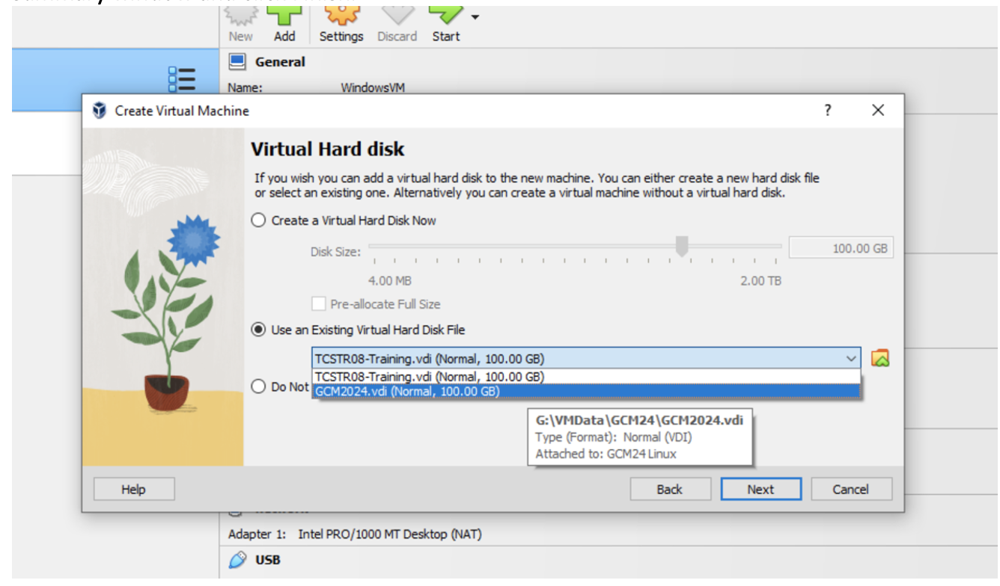

Oracle VM VirtualBox Installation Guide
Table of Contents
- Introduction to Virtual Box and Virtual Machine
- Host Operating System (OS) Requirements for Virtual Box
- Installation of Virtual Box for Windows OS
- Installation of Virtual Box for MacOS
- Globus VM Downloading Steps
- Additional Resources and Troubleshooting for VM Image and Globus
- Installing a Virtual Machine (VM) Image
- Running and Managing VMs (Optional)
- Additional Resources and Troubleshooting for Virtual Box
Introduction to Virtual Box and Virtual Machine
Concept of VirtualBox and How It Works
VirtualBox is a powerful open-source virtualization software that enables users to run multiple operating systems on a single physical machine. This concept of virtualization allows users to create a virtual environment, or Virtual Machine (VM), that emulates the hardware of a computer, enabling the installation of guest operating systems like Linux or Windows alongside the host operating system.
How VirtualBox Works
Virtualization Layer: VirtualBox operates as a virtualization layer between the host operating system and the guest operating systems. It abstracts the hardware resources of the physical machine, allowing the VM to use the host’s CPU, memory, storage, and other peripherals without interference.
Guest OS Installation: When you create a VM in VirtualBox, you allocate specific resources (such as CPU cores, RAM, and storage) to that VM. You can then install a guest operating system as you would on a physical machine. This guest OS thinks it’s running on its dedicated hardware, while in reality, it’s sharing the host’s resources.
Resource Allocation: VirtualBox allows for dynamic allocation of resources. For example, you can set the amount of RAM or number of CPU cores a VM can utilize. This flexibility helps optimize the performance of both the host and guest operating systems.
Isolation: Each VM operates in its isolated environment. Changes made within a VM do not affect the host OS or other VMs running on the same machine. This isolation is beneficial for testing software, running applications in different environments, or experimenting with new configurations without risking the stability of the host system.
Snapshots and Cloning: VirtualBox supports features like snapshots, which allow you to save the state of a VM at a specific point in time. This is useful for testing and development, as you can revert to a previous state if something goes wrong. Cloning allows you to create a copy of a VM for further experimentation.
Networking: VirtualBox provides various networking options, enabling VMs to communicate with the host, other VMs, or external networks. You can set up different network modes, such as NAT, bridged, or host-only, depending on your needs.
Overall, VirtualBox offers a flexible and efficient way to run multiple operating systems on a single machine, making it an invaluable tool for developers, testers, and anyone who needs to use different environments.
Note: The VM image file (.vdi) contains all the software installed for the course.
Host Operating System (OS) Requirements for Virtual Box
- RAM requirement: 8GB (preferably 12GB)
- Processor requirement: 4 processors (preferably 8)
- Hard disk space: 200GB
- Admin rights to the computer.
Note: Before installing VirtualBox, ensure that the Microsoft Visual C++ 2019 Redistributable Package is installed on your Windows computer. Some applications, including VirtualBox, require this package to function correctly.
Installation of Virtual Box for Windows OS
Installing Microsoft Visual C++ 2019 Redistributable Package (if needed)
- Download the Package:
- Visit the official Microsoft download page for the Visual C++ Redistributable: Download Visual C++ Redistributable.
- Scroll down to the “Visual Studio 2019” section and choose the appropriate version for your system.
- Choose the Right Version:
- x86: For 32-bit operating systems or if you need a 32-bit application on a 64-bit OS.
- x64: For 64-bit operating systems and applications.
- Run the Installer:
- Locate the downloaded installer file (named like
vc_redist.x64.exeorvc_redist.x86.exe). - Double-click the installer to run it.
- Locate the downloaded installer file (named like
- Accept the License Agreement:
- Read and accept the license terms, then click on “Install.”
- Complete the Installation:
- Wait for the installation to finish, then click “Close.”
- Restart Your Computer (If Necessary):
- If prompted, restart your computer to apply the changes.
Verification
To verify that the Visual C++ 2019 Redistributable is installed: - Open Control Panel > Programs > Programs and Features. - Look for “Microsoft Visual C++ 2019 Redistributable” in the list.
By ensuring that the Visual C++ 2019 Redistributable Package is installed, you can help prevent compatibility issues with applications that rely on these runtime components.
Steps on Downloading VirtualBox
Download VirtualBox: Navigate to the official VirtualBox website and go to the “Downloads” section. Choose the version that matches your Windows operating system (32-bit or 64-bit).

Download VirtualBox Download Extension Pack (Optional): If needed, download the VirtualBox Extension Pack from the same “Downloads” section. This pack provides additional functionalities like USB 2.0 and 3.0 support, VirtualBox Remote Desktop Protocol (VRDP), and more.
Run the Installer: Locate the downloaded VirtualBox installer file (.exe) and double-click to run it. Follow the on-screen instructions provided by the installer. Click “Next” to proceed through the setup wizard. You may customize installation options if desired.
Install Extension Pack (Optional): If you downloaded the Extension Pack, double-click on the file (e.g., Oracle_VM_VirtualBox_Extension_Pack-6.0.14-133895.vbox-extpack) to install it. This can be done after VirtualBox installation.
Complete the Installation: Once the installation is complete, click “Finish” to exit the installer.
Installation of Virtual Box for MacOS
Check if Your Mac is Intel or ARM-based
To check whether your Mac uses an Intel chip or an ARM-based (M1/M2/M3) chip:
- Click on the Apple logo in the top-left corner of your screen.
- Select “About This Mac.”
- In the “Overview” tab, look for the Processor section:
- If it says Intel, your Mac uses an Intel processor.
- If it mentions Apple Silicon, your Mac uses an ARM-based chip (M1/M2/M3).
This information will guide you on the compatibility of VirtualBox with your system.
Steps on Downloading VirtualBox
Download VirtualBox: Navigate to the official VirtualBox website and go to the “Downloads” section. Choose the version compatible with macOS.

Download VirtualBox for macOS Download Extension Pack (Optional): If needed, download the VirtualBox Extension Pack from the same “Downloads” section. This pack provides additional functionalities like USB 2.0 and 3.0 support, VirtualBox Remote Desktop Protocol (VRDP), and more.
Run the Installer: Locate the downloaded VirtualBox installer file (.dmg) and double-click to open it. Follow the on-screen instructions to install VirtualBox on your macOS. Drag the VirtualBox icon to the Applications folder.
Install Extension Pack (Optional): If you downloaded the Extension Pack, double-click on the file (e.g., Oracle_VM_VirtualBox_Extension_Pack-6.0.14-133895.vbox-extpack) to install it. This can be done after VirtualBox installation.
Complete the Installation: Once installed, open VirtualBox from Applications folder. The first time you run it, macOS may ask for permission to run the application. Click “Open” to proceed.
Downloading Virtual Machine (VM) Image via Globus
The Virtual Machine (VM) is a large download that many users find challenging. To address this, we use Globus software to facilitate the process. Globus is a research-oriented file transfer tool that offers the advantage of resuming downloads from the same position in case of an internet connection failure, instead of starting over.
- Globus Website: https://www.globus.org
Globus VM Downloading Steps:
Create a Globus Connect Personal Account:
- Visit Globus Connect Personal and select the download for your operating system (Mac or Windows). This will prompt you to create an account.
- Choose to use Globus ID to sign in. (picture below)
Download VirtualBox - If you don’t have an ID yet, select “Need a Globus ID? Sign up.”
Download VirtualBox - IMPORTANT: Make sure to specify that it’s for research or educational purposes and create your account. Remember your password for later steps.
Download VirtualBox Download the Globus Client:
- Download the Globus client onto your local machine (or where you intend to run the VM) and allow it to install.
- It will ask for a collection name; give it a name you’ll remember, like “home_computer” or “local_mac.” This name refers to the local folders on your computer where we will send the VM in a later step.
Open Globus File Manager:
- Click on the small “g” icon on the taskbar and select “Web: Transfer Files.”
- For Linux users: There may not be a shortcut. Start Globus Personal Connect via the command line and navigate to https://app.globus.org/file-manager to begin the file manager.
Find Your Files:
- Your local endpoint is your computer. Click on “Collections” on the left.
Search for WCS Endpoint:
- Search for the endpoint
wcs_data_transfers. - Click on the endpoint labeled
wcs_data_transfersand select “Open in File Manager.”

Download VirtualBox - Search for the endpoint
Transfer the VM:
Select the VM file
CourseName_Year.vdi.gzwith the checkbox, then click on “Transfer or sync to.”In the opposite panel, click on the search box.

Download VirtualBox
Choose Local Endpoint:
Click on “Your Collections” and select your local endpoint (the name will be what you gave it during the Globus Personal Connect installation).
You can also browse to choose the specific directory or folder on your local machine where you want the VM to be downloaded.

Download VirtualBox
Start the Download:
Once you have chosen the local location, click on the “Start” button under the
wcs_data_transferssection to download to your local endpoint.

Wait for Completion:
- Wait for the download to complete. Globus will email you once it’s done, and you can track the transfer in the “Activity” menu.
Install VirtualBox and VM:
- Run the installation of VirtualBox, then install the virtual machine you just downloaded.
Note: The course data is also uploaded on Globus and can be searched as CourseName_Year.vdi.gz.
Additional Resources and Troubleshooting for Globus
- Globus Documentation: https://docs.globus.org/guides/
- Virtual Box Documentation: https://www.virtualbox.org/wiki/Documentation
- Virtual Box Manual: https://www.virtualbox.org/manual/ch01.html
- Virtual Box Forum: https://forums.virtualbox.org/index.php (helpful for finding similar problem queries and solutions)
- Stack Overflow: https://stackoverflow.com/ (Public Q&A platform for debugging)
- Bioinformatics (BioStars) Forum: https://www.biostars.org/t/Forum/ (General Bioinformatics queries)
Installing a Virtual Machine (VM) Image
A Virtual Machine image (with a .vdi extension) replicates the exact VM used during the course. Downloading and installing the VM image saves time, as it contains all the necessary software and exercise data. If you’re unable to find certain data, it should be available in the course GitHub repository.
Note: While the VM image file contains all the software installed for the course, admin rights are still required to run some sudo commands.
Steps to Install the Virtual Machine Image:
Start VirtualBox:
- Locate the VirtualBox shortcut on your desktop or find it in the Start Menu. Double-click the icon to launch the application.
Create a Virtual Machine:
- In the VirtualBox Manager, click “New” to create a new virtual machine.
- Enter a name for your virtual machine (e.g., “CourseName 2024”).
- Choose “Linux” as the type and select “Ubuntu 64-bit” as the version. Please Note: The vdi files are stored as
CourseName_Year.vdi.gz. For example, we are here looking at GCM24 course.
Download VirtualBox Memory (RAM) Allocation:
- Determine the amount of RAM to allocate, keeping it close to the top of the green section on a PC.
- Adjust the number of processors, ideally half of the available ones. Click Next when settings are configured.

Download VirtualBox Hard Disk:
- Indicate the location of the virtual machine file you downloaded.
- Choose “Use an existing virtual hard disk file,” click the icon next to the menu, and add the
.vdifile. - Confirm your selection in the summary window and click Finish.

Download VirtualBox Follow Ubuntu Installation Wizard:
- Follow the on-screen instructions to install Ubuntu. Choose language, keyboard layout, and select “Install Ubuntu.”
- Follow the prompts for time zone, user account, and installation type.
Complete Installation:
- Allow the installation process to complete. VirtualBox might prompt you to restart the virtual machine.
- Double-check your choices in the confirmation window. Once satisfied, start the virtual machine by highlighting its name and clicking the “Start” icon in the manager window.
Adjust Screen Size:
- The screen resolution should automatically adjust to match your VirtualBox window size.
- If it doesn’t, manually adjust the screen size in the Ubuntu VM:
- Go to “Settings” > “Displays” in the Ubuntu system settings.
- Choose the desired resolution that fits your VirtualBox window.

Download VirtualBox Login Ubuntu:
- The virtual machine will go through a boot process. After a short time, a window will appear.
- Note: The user account is named
manager, and the password, if required, is alsomanager.
Running and Managing VMs (Optional)
Adjusting the screen size in an Ubuntu virtual machine (VM) within VirtualBox involves installing and configuring the VirtualBox Guest Additions. By installing VirtualBox Guest Additions, you enable features like automatic screen resizing, improved graphics performance, and seamless mouse integration between your host machine and the Ubuntu VM.
Steps to Adjust Screen Size:
Start Ubuntu VM:
- Ensure that your Ubuntu VM is running.
Insert Guest Additions CD:
- In the VirtualBox menu, go to “Devices” and choose “Insert Guest Additions CD image.”
- This action virtually inserts the Guest Additions CD into your Ubuntu VM.
Open Terminal:
- Open a terminal window in Ubuntu by pressing
Ctrl + Alt + Tor using the application launcher.
- Open a terminal window in Ubuntu by pressing
Navigate to the CD Directory:
Change to the directory where the Guest Additions CD is mounted, typically located in the
/mediadirectory.Use the following command to navigate to the directory (Note: The directory name may vary based on your VirtualBox version):
cd /media/username/VBox_GAs_6.1.26
Run Guest Additions Installer:
Run the Guest Additions installer by entering the following command in the terminal:
sudo sh VBoxLinuxAdditions.runNote: You may be prompted to enter your password.
Follow Installation Wizard:
- The Guest Additions installer will launch an installation wizard. Follow the prompts to complete the installation.
Reboot Ubuntu VM:
- After the installation is complete, it’s recommended to reboot your Ubuntu VM to apply the changes.
Adjust Screen Size:
Once the VM has restarted, the screen resolution should automatically adjust to match your VirtualBox window size.
If it doesn’t, you can manually adjust the screen size in the Ubuntu VM:
- Go to “Settings” > “Displays” in the Ubuntu system settings.
- Choose the desired resolution that fits your VirtualBox window.

Download VirtualBox
Verify Changes:
- Confirm that the screen resolution has changed and suits your preferences.
Manage VM Settings:
- In the VirtualBox Manager, manage VM settings by selecting the VM and clicking on “Settings.” Here, you can adjust parameters such as RAM allocation, processors, and storage.
Snapshot and Clone:
- VirtualBox allows you to take snapshots of your VM at different states, providing a backup mechanism. You can also clone VMs for testing or development purposes.
Shut Down and Save State:
- Properly shut down your VM when finished, either by choosing “Shut Down” from within the guest OS or by selecting the VM in the VirtualBox Manager and clicking the “Close” button.
- Optionally, you can save the machine state to resume exactly where you left off.
Beware: Saving the machine state to resume is not very robust; there is a high chance VirtualBox might crash or not resume from the same point. It is advised to save all files and then “shut down” the VM.
Additional Resources and Troubleshooting for VirtualBox
- VirtualBox Documentation: https://www.virtualbox.org/wiki/Documentation
- VirtualBox Manual: https://www.virtualbox.org/manual/ch01.html
- VirtualBox Forum: https://forums.virtualbox.org/index.php (helpful for finding similar problem queries and solutions)
- Ubuntu Documentation: https://help.ubuntu.com/
- Ubuntu Community Support: https://ubuntu.com/support/community-support
- Stack Overflow: https://stackoverflow.com/ (Public Q&A platform for debugging)
- Bioinformatics (BioStars) Forum: https://www.biostars.org/t/Forum/ (General Bioinformatics queries)
Wellcome Connecting Science GitHub Home Page
For more information or queries, feel free to contact us via the Wellcome Connecting Science website.
Find us on socials Wellcome Connecting Science Linktr